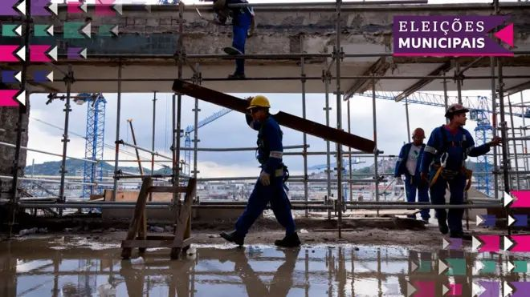

Degradation in the quarry Degradação na pedreira
At age 57, Cláudio—a pseudonym—has accumulated nearly half a century of experience cutting stone. He has worked across multiple states since childhood, learning the trade from his parents. His last assignment brought him to Taperoá, a municipality in rural Paraíba, where he found work at a stone quarry. What followed was a descent into conditions that Brazilian law classifies as slavery.
Aos 57 anos, Cláudio (nome fictício) relata já ter acumulado quase meio século de experiência no ofício de cortar pedras. Ele diz ter trabalhado a vida toda, desde a infância, em diversos Estados, depois de aprender o ofício com os pais, até que chegou à Taperoá, no sertão da Paraíba, onde conseguiu trabalho em uma pedreira na zona rural.
Without employer-provided safety training, Cláudio worked without protective equipment in an inherently dangerous activity that included the use of explosives. The goal: produce parallelepipeds (flagstone blocks) for street paving.
Sem ter tido treinamento de empregadores, Cláudio não usava equipamentos de proteção, embora a atividade seja arriscada e inclua até mesmo o uso de explosivos. O objetivo final do ramo é produzir pedras do tipo paralelepípedo para serem usadas, principalmente, em obras de calçamento.
After nine hours cutting stone in the sun, workers slept on scraps of foam and improvised car seats. They had no bathrooms. They bathed in rainwater pooled on rocks.
Depois de trabalhar nove horas por dia cortando pedras, os trabalhadores dormiam sobre pedaços de espuma velha ou bancos de carro improvisados como camas. Não havia banheiro. O banho era tomado em poças formadas pela chuva sobre as pedras.
When not cutting, workers were housed in a ramshackle shelter: dirt floor, wooden frame covered in plastic sheets and tarps. Their belongings lay scattered on the ground. Food was prepared in a stone structure on the ground with fire and firewood. There was no toilet—workers relieved themselves in the bush.
Quando não estava sob o sol cortando pedras, o trabalhador ficava alojado em um barraco improvisado no local, com chão de terra, estrutura de madeira rústica e coberta por lona e pedaços de plástico. Pertences dele e dos colegas ficavam espalhados pelo chão. Os alimentos que comia eram mantidos ao ar livre e o preparo era feito em uma estrutura de pedra improvisada, no chão, com fogo e lenha. Como não havia banheiro, fazia suas necessidades no mato. Já o banho era tomado em poças formadas pela chuva sobre as pedras.
In June 2024, Brazil's Ministry of Labor and Employment auditors reached the quarry and documented these conditions. They cited the site for maintaining workers in conditions analogous to slavery. Four workers, including Cláudio, were rescued. The employer, Haroldo dos Santos Alves, 59 years old, was placed on the government's "dirty list" of slave labor violators.
Em junho de 2024, auditores do Ministério do Trabalho e Emprego chegaram à pedreira e registraram as condições. Cláudio e outros três trabalhadores foram resgatados. O empregador foi autuado por manter trabalhadores em condições análogas à escravidão.

Photo credit: BBC News Brasil / Vitor Serrano
Crédito da foto: BBC News Brasil / Vitor Serrano
Where the money came from De onde vieram os recursos
The stones cut by Cláudio and his coworkers became part of a larger supply chain feeding what municipal officials promoted as the largest paving project in the history of Juazeirinho—a city of just over 17,000 people in Paraíba. The project was championed by the city's mayor and supported by federal Deputy Hugo Motta, who is now (as of February 2025) President of Brazil's Chamber of Deputies.
As pedras cortadas por ele integraram uma ponta da cadeia produtiva do que viria a ser chamado de maior projeto de pavimentação da história de uma cidade vizinha à pedreira, Juazeirinho, também na Paraíba, liderado pela prefeita da cidade e apoiado por um parlamentar que hoje é uma das mais poderosas autoridades do país: o deputado federal e presidente da Câmara dos Deputados Hugo Motta (Republicanos-PB).
BBC News Brasil traced the origin of the funds. The resource stemmed from a "relator amendment"—the technical term for what has popularly become known as the "secret budget," a mechanism within Brazil's General Budget that allows parliamentarians to direct funds without transparency, based on political dealings, and with publicity left to the discretion of the congressman.
A BBC News Brasil identificou que a origem política do recurso que bancou o contrato com a empresa - a que comprou as pedras produzidas por trabalhadores em condições análogas à escravidão - está vinculada a dois parlamentares do mesmo Estado.
In response to a request under Brazil's Access to Information Law, the Chamber of Deputies provided two official letters requesting the release of funds from this amendment to Juazeirinho. Both were submitted in 2024: one by Senator Veneziano Vital do Rego (MDB-PB) and another by Deputy Hugo Motta, even as Chamber President, in April 2025.
Em resposta enviada por meio da Lei de Acesso à Informação à BBC News Brasil, a Câmara dos Deputados forneceu dois ofícios que pedem a liberação de recursos desta emenda a Juazeirinho, enviados pelo senador Veneziano Vital do Rego (MDB-PB), em 2024, e também pelo deputado federal Hugo Motta, já como presidente da Câmara, em abril de 2025.
How the secret budget works: a case study in opaque governance Como funciona o orçamento secreto: um caso de governança opaca
The relator amendment mechanism allows parliamentarians to allocate federal resources without the normal transparency requirements. The system works like this: a city requests funds (or an agreement is struck verbally); the parliamentarian makes the formal indication; the municipality submits a project to Caixa Econômica Federal for evaluation. If approved, the municipality conducts competitive bidding and selects the contractor with the best proposal.
O apoio via emendas, em casos como este, funcionava assim: a prefeitura pede os recursos e o parlamentar faz a indicação ao orçamento (pode haver ou não apresentação de um ofício e há casos em que o acordo é apenas verbal). O governo municipal, então, precisa apresentar um projeto que será avaliado pela Caixa Econômica Federal. Só depois de liberado é que o governo municipal pode fazer licitação e selecionar a empresa que fará a obra.
Formally, the parliamentarian's role ends after the allocation. Responsibility for project oversight supposedly transfers to the municipality and later to the courts of account. In practice, parliamentarians receive extensive credit—and votes—for bringing funds, while accountability for how those funds are used remains diffuse.
Formalmente, a responsabilidade pela fiscalização da obra é do município (e posteriormente dos tribunais de contas) — não da Caixa, nem do parlamentar, que apenas indica o destino dos recursos.
"The effect for electoral capitalization is immediate. The parliamentarian treats the resource as if it were theirs."
"O efeito para a capitalização eleitoral é imediato. O parlamentar que faz isso está tratando o recurso como se fosse dele."
In Juazeirinho, the municipal administration acknowledged that the nature of the amendment "does not invalidate the political origin of the articulation, publicly recognized by the municipality and by Deputy Hugo Motta himself." The mayor, Anna Virginia Matias, even honored Motta with street nameplates bearing his name on paved thoroughfares—the very roads built with funds he directed.
O município disse que o depuutado Hugo Motta "sempre foi um grande deputado, um parceiro essencial da nossa cidade, alguém que nunca mediu esforços para levar investimentos e melhorias para o nosso povo."

Hugo Motta was honored in 2023 at a ceremony celebrating the paving project he funded
Hugo Motta foi homenageado em cerimônia celebrando o projeto de pavimentação que financiou
The intermediary: bearing the burden alone O intermediário: carregando o fardo sozinho
Haroldo dos Santos Alves, 59, was the visible face of the labor violations, but arguably one of the least enriched links in the chain. As an intermediary stone broker, he sourced materials for contractors. When Ministry of Labor auditors arrived in June 2024, workers identified him as the person responsible. His name—and only his—was placed on the official labor violation notice and added to the government's "dirty list" of slave labor perpetrators.
Haroldo dos Santos Alves, 59 anos, era um intermediário da cadeia de produção e afirma que nada lucrou com o empreendimento. O auto de infração foi lavrado em seu nome. O nome dele também foi inserido na lista suja do trabalho escravo.
Haroldo told BBC News Brasil that he is not a formal employer—that he and the quarry workers are each "stone cutters" working individually. He claimed to live on less than minimum wage, unable to restore the quarry to operation or find other work since the operation was shuttered.
"Tem quase cinquenta anos que eu mexo com pedra e eu não tenho riqueza. O senhor [repórter] entrou na minha casa lá, é humilde. Moro de aluguel e vivo com menos de um salário [mínimo]."
A contractor representative, Jorge Ramos (lawyer and representative of Construtora Realizar), paid roughly R$ 32,000 in severance to the rescued workers on behalf of the company. He acknowledged that the reality in these quarries "is really something hard to see," but argued that low bid prices from municipalities necessitate the use of cheap, informal labor.
Jorge Ramos, advogado e representante da Construtora Realizar, afirmou que "os preços para empresas são horríveis, consequentemente a compra também vai ser horrível."
"Almost fifty years I've worked with stone and I have no wealth. The reporter came to my house—it's humble. I rent and live on less than minimum wage."
"Tem quase cinquenta anos que eu mexo com pedra e eu não tenho riqueza. O senhor entrou na minha casa lá, é humilde. Moro de aluguel e vivo com menos de um salário."
The Ministry of Labor's inspection report, however, noted that "the entire destination of the fruit of labor from the manpower found in the quarry was for the benefit of the public administration." The report suggested that Construtora Realizar was the "primary recipient," yet the company was never added to the dirty list. The municipality was cited but not held responsible.
A Prefeitura de Juazeirinho foi citada no documento da fiscalização, mas não responsabilizada formalmente. O relatório afirma que toda a produção estava em benefício final à administração pública.
A system structured for deniability Um sistema estruturado para negação
The structure of relator amendments creates a peculiar form of accountability evasion. The parliamentarian gets credit for bringing funds while maintaining plausible deniability about how they are used. The municipality is ostensibly in charge but often claims ignorance about supply chain conditions. Caixa Econômica Federal approves projects but claims limited oversight responsibility. Contractors win bids then subcontract work through informal chains where labor standards are unenforceable.
A estrutura das emendas de relator cria uma forma peculiar de evasão de responsabilidade. O parlamentar ganha crédito por trazer recursos enquanto mantém negação plausível sobre como são usados.
The Juazeirinho case reveals how this structure allows systematic exploitation. For Lívia Miraglia, a post-doctoral researcher in labor law at UFMG who specializes in modern slavery, the ideal would be to hold accountable the employer who profits most—in this case, Construtora Realizar. "They are the ones getting economic benefit," she argued, noting that intermediaries like Haroldo "are often as poor as the workers they exploit."
Para Lívia Miraglia, pós-doutora em direito e coordenadora da Clínica de Trabalho Escravo, a autuação deveria ser contra quem de fato tira proveito econômico, não os intermediários, que "costumam ser quase tão pobres quanto os trabalhadores que foram explorados."
Miraglia advocates for evolving labor enforcement to hold accountable the entire supply chain, including public authorities if necessary. "In an ideal world," she said, "responsibility would reach everyone who directly or indirectly benefited economically from the product of slave labor, including politicians who use it for electoral capital."
Ela defende que é preciso evoluir na esfera trabalhista para que haja responsabilização de toda a cadeia produtiva, inclusive do poder público. "Em um mundo ideal, a responsabilidade deveria alcançar todos aqueles que, direta ou indiretamente, tiveram algum proveito econômico sobre o produto fruto de trabalho escravo, inclusive eventuais políticos que se utilizem disso para fins de capital eleitoral."
"In an ideal world, responsibility would reach everyone who directly or indirectly benefited—including politicians who used this for electoral capital."
"Em um mundo ideal, a responsabilidade deveria alcançar todos aqueles que tiveram proveito, inclusive políticos que se utilizem disso para fins eleitoral."

Streets paved with funds Motta directed, bearing his name
Ruas pavimentadas com recursos que Motta direcionou, com seu nome
This is not an isolated case Este não é um caso isolado
BBC News Brasil's investigation, which began in late 2024, mapped cases of slave labor in quarries supplying paving stones for public works across eight Brazilian states. The Juazeirinho case is one of several revealing a pattern: informal stone supply chains, inadequate municipal oversight, weak accountability for contractors, and relator amendments directing funds without transparency.
A BBC News Brasil investiga a relação entre o trabalho escravo em pedreiras e obras públicas desde o fim de 2024 e já publicou, em abril, uma reportagem especial que mapeou casos como este, de Juazeirinho, em oito Estados brasileiros.
Federal auditor Gislene Stacholski, who coordinated the rescue operation in Juazeirinho, stated plainly: "Municipalities cannot track stones because they admit that everything is informal." She emphasized that public authorities must take responsibility for supply chains they finance. "They have to inspect everything."
Gislene Stacholski, auditora fiscal do trabalho que coordenou a operação que identificou os trabalhadores, acredita que o poder público também deve tomar para si a responsabilidade. "Elas [prefeituras] não conseguem rastrear as pedras porque admitem que seja tudo informal."
Federal Public Defender Pedro Wagner Pereira, who works on worker rescue operations, noted the recurring pattern: "In 2025, the public sector cannot sponsor situations of slavery." The mayor of Juazeirinho belatedly claimed ignorance—saying she only learned of the violation after BBC News Brasil's inquiry, months after the June 2024 rescue operation.
O defensor público federal Pedro Wagner Pereira afirma que a participação do poder público nos casos identificados é uma constante. "Estamos em 2025 e o poder público não pode patrocinar situações de trabalho análogo à escravidão."
What would accountability look like? Como seria a responsabilização?
The Juazeirinho case demonstrates how relator amendments—political discretionary spending mechanisms—can flow into public works contaminated by labor exploitation. The design of the system itself creates conditions where:
O caso de Juazeirinho demonstra como as emendas de relator podem desembocar em obras públicas contaminadas por exploração laboral. O desenho do sistema cria condições onde:
- Parliamentarians receive electoral credit without operational responsibility
- Parlamentares recebem crédito eleitoral sem responsabilidade operacional
- Municipalities claim inadequate capacity to audit supply chains
- Municípios afirmam capacidade inadequada para auditar cadeias de fornecimento
- Contractors outsource dangerous work to informal intermediaries
- Construtoras terceirizam trabalho perigoso para intermediários informais
- Enforcement concentrates on the poorest link—the immediate employer—while wealthier beneficiaries escape
- Fiscalização concentra-se no elo mais pobre—o empregador imediato—enquanto beneficiários mais ricos escapam
Real accountability would require: strengthened labor law enforcement across entire supply chains; mandatory due diligence by municipalities in public procurement; rules preventing relator amendment funds from reaching projects with labor violations; and political consequences for parliamentarians whose directed funds end up supporting exploitation.
A responsabilização real exigiria: cumprimento fortalecido da lei trabalhista em cadeias inteiras; diligência obrigatória pelas municípios em licitações; regras impedindo que recursos de emendas de relator cheguem a projetos com violações trabalhistas; e consequências políticas para parlamentares cujos recursos direcionados terminam apoiando exploração.
The municipality must accept responsibility for how public funds are used in their jurisdiction, from the top of the supply chain to the quarry floor.
O município deve aceitar responsabilidade por como recursos públicos são usados em seu território, da origem à pedreira.

A newly paved street in Juazeirinho—built by rescued workers from a quarry operating in slave labor conditions
Rua recém pavimentada em Juazeirinho — construída com pedras de uma pedreira operando em condições de trabalho escravo